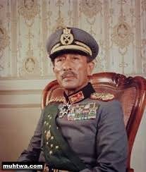

 Muhammad Anwar El Sadat, born 1918 in Egypt, is the first Muslim Nobel Laureate. Egypt’s third president, he became a hero for Egyptians and Arabs when he regained Sinai after it was occupied by Israel during the Six-Day War in 1967. Afterwards, he negotiated a peace treaty with Israel, for which he was criticized, called a traitor and was given a Nobel Peace Prize. Not surprisingly, El Sadat was assassinated While all facts proved that Islamists were responsible for the assassination, Sadat’s nephew, Talaat el-Sadat, claimed that it was a bigger conspiracy that involved Egypt’s Armed Forces, the United States and Israel.